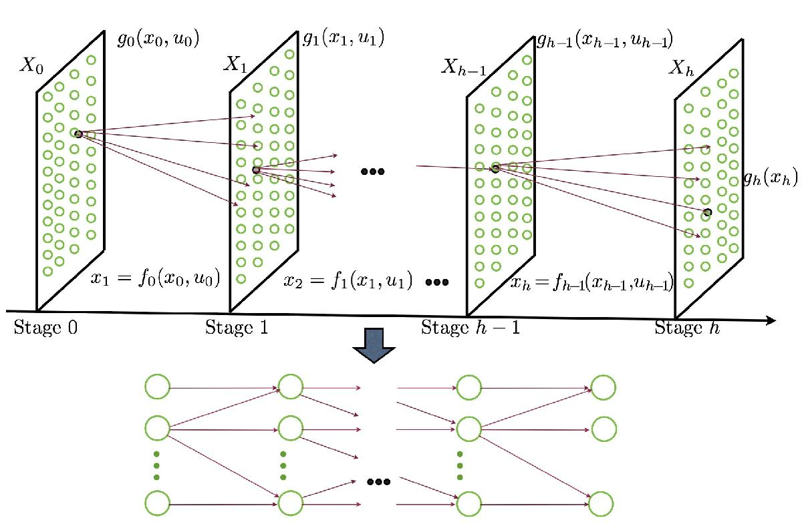

import numpy as np
import scipy.linalg
import matplotlib.pyplot as plt
%matplotlib ipymplState and input discretization
A stage decision problem can be approximated by a discrete optimization problem by discretizing the state and the input, as depicted in Figure 1.

In this example, we illustrate this fact and use it to move the position of a double integrator system from zero initial condtions to an unitary position and zero velocity with mininum quadratic input cost. Formally,
\[\min \int_0^1u^2 dt\]
\[\dot{z} = v\]
\[\dot{v}=u\]
\[z(0)=0, \ \ v(0)=0, \ \ z(1)=0, \ \ v(1)=0. \]
The optimal solution to this problem can be obtained by the Pontryagin’s maximum principle and is given by
\[z=3t^2-2t^3, v=6t-6t^2, u=6-12t\]
The model of a double integration after temporal discretization with a zero order hold input is
\[ x_{k+1}=Ax_k+Bu_k\]
where \(k\in\{0,\dots,h-1\}\), \(x_k\) comprises position \(z_k\) and velocity \(v_k\), i.e., \(x_k= [z_k \ \ v_k]^T\), and the control input is \(u_k\), and
\[A=e^{\left[ \matrix{ 0 & \tau \cr 0& 0 } \right]}={\left[ \matrix{ 1 & \tau \cr 0& 1 } \right]} B = \int_0^\tau e^{As}ds\left[\matrix{0 \cr 1} \right] = \left[\matrix{\frac{\tau^2}{2} \cr \tau} \right].\]
We quantize/discretize the state and input variables as follows
\[v_k \in \delta_v \bar{v}_k\]
\[z_k \in \delta_z\bar{z}_k\]
\[u_k=\delta_u\hat{u}_k\]
where \(\hat{u}_k = \bar{u}_k-1-(n_u-1)/2\) and
\[\bar{u}_k \in \{1,2,\dots,n_u\}\]
\[\bar{v}_k \in \{0,1,\dots,n_v\}\]
\[\bar{z}_k \in \{0,1,\dots,n_z\}\]
Moreover, we define
\[\bar{x}_k=1+\bar{v}_k+(n_v+1)\bar{z}_k\]
from which we conclude that
\[\bar{x}_k \in \{1,2,\dots,n_x\}\]
with \(n_x = (n_z+1)(n_v+1)\). If we choose \(\delta_z=\delta_u\tau^2/2\), \(\delta_v=\delta_u\tau\), we can conclude that
\[\bar{z}_{k+1}=\bar{z}_k+2\bar{v}_k+\hat{u}_k\]
\[\bar{v}_{k+1}=\bar{v}_k+\hat{u}_k\]
from which we can obtain a relation
\[\bar{x}_{k+1}=f(\bar{x}_k,\bar{u_k})\]
for the cost function we can simply write
\[\tau\sum_{k=0}^{K-1}u_k^2 \rightarrow \tau\delta_u^2\sum_{k=0}^{K-1}\hat{u}_k^2 \]
The terminal and initial condtions are
\[J_h(\bar{x}_h) = 0 \text{ if } \bar{x}_h = 1+0+(n_v+1)(n_z)\]
\[J_h(\bar{x}_h)=\infty \text{ otherwise, and } \bar{x}_0=1+0+(n_v+1)(0)=1.\]
The following script allows to access how close the response is to the optimal continuous-time solution given above.
def dp(M, C, Jh, h):
n = M.shape[0]
J = Jh
J_ = np.zeros((n,h))
u_ = np.zeros((n,h))
ind = np.arange(M.shape[1]).reshape(M.shape[1],1)
for k in range(h-1,-1,-1):
for i in range(n):
aux = [int(M[i,:][idx]) for idx in range(71)]
J_[i,k] = np.min( C[[i],:].T + J[aux])
c = ind[J_[i,k] == (C[[i],:].T + J[aux])]
u_[i,k] = c[-1]+1
J = J_[:,[k]]
return u_,J_#parameters
dt = 0.5
K = int(np.round(1/dt))
du = 0.2
dv = dt*du
dd = dt**2/2*du
nu = int(2*(7/du)+1)
nv = int(np.round(2/dv))
nd = int(np.round(1/dd))
nx = (nd+1)*(nv+1)
#formulation
D = np.floor((np.arange(nx).reshape(1,nx))/(nv+1)).T @ np.ones((1,int(nu)))
V = np.mod(np.arange(nx).reshape(nx,1),nv+1)@np.ones((1,nu))
aux = np.floor((nu-1)/2)
U = np.ones((nx,1))*np.arange(-aux,aux+1).reshape(1,nu)
V_1 = np.minimum(np.maximum(V+U,np.zeros((nx,nu))),np.ones((nx,nu))*nv)
D_1 = np.minimum(np.maximum(D + 2*V + U,np.zeros((nx,nu))),np.ones((nx,nu))*nd)
X_1 = V_1 + (nv+1)*D_1 #+1
M = X_1
C = np.ones((nx,1))@(np.arange(-aux,aux+1)**2).reshape(1,nu)
Jh = np.inf*np.ones((nx,1))
Jh[nd*(nv+1)] = 1
#Get policy with DP and run system
mu, J = dp( M, C, Jh, K)
#obtain u and x for the given initial position from the policy obtain (get
#optimal path)
d = np.zeros((1,K+1))
v = np.zeros((1,K+1))
xbar = np.zeros((1,K+1))
u = np.zeros((1,K))
ubar = np.zeros((1,K))
xbar[0] = 1
d[0] = 0
v[0] = 0
for k in range(K):
ubar[:,k] = mu[int(xbar[:,k]),k]
xbar[:,k+1] = M[int(xbar[:,k]),int(ubar[:,k])]
u[:,k] = (ubar[:,k]-(nu-1)/2-1)*du
d[:,k+1] = np.floor( (xbar[:,k+1]-1)/(nv+1) )*dd
v[:,k+1] = np.mod( (xbar[:,k+1]-1),nv+1 )*dv
# cost
cost = dt*J[0,0]*du**2cost# Plots
hsol = 0.0001
tsol = np.arange(0,1,hsol)
zsol = 3*tsol**2-2*tsol**3
vsol = 6*tsol - 6*tsol**2
usol = 6-12*tsol
f, ax = plt.subplots(1,3)
kvec = np.arange(K+1)/K
ax[0].stem(kvec[:-1], u[0])
ax[0].plot(tsol, usol, 'g')
ax[0].set_xlabel('time')
ax[0].legend(['$u_k$', '$u(t)$'])
ax[0].grid(True)
ax[1].stem(kvec,d[0])
ax[1].plot(tsol,zsol,'g')
ax[1].set_xlabel('time')
ax[1].legend(['$x_k$', '$x(t)$'])
ax[1].grid(True)
ax[2].stem(kvec,v[0])
ax[2].plot(tsol,vsol,'g')
ax[2].set_xlabel('time')
ax[2].legend(['$v_k$', '$v(t)$'])
ax[2].grid(True)